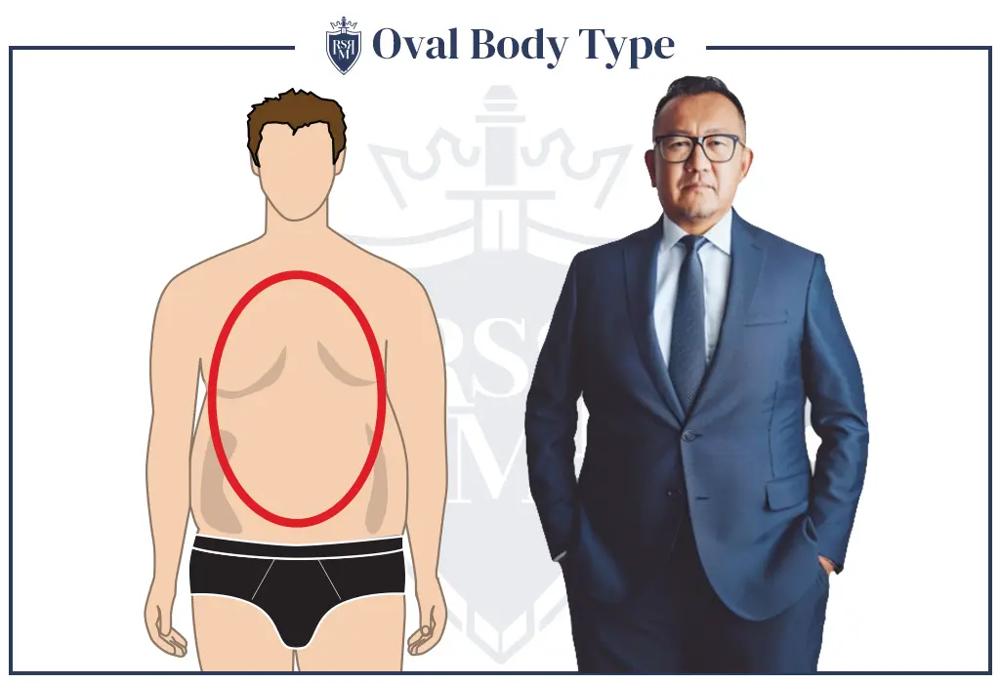

The oval body shape in men is characterized by a rounded, fuller appearance, especially around the midsection.The waist and stomach area are the widest parts of the body, often appearing rounded or oval.The shoulders and hips are narrower compared to the midsection, creating an oval shape.Your face length is longer than the cheekbone width as well as a forehead width larger than your jawline.
